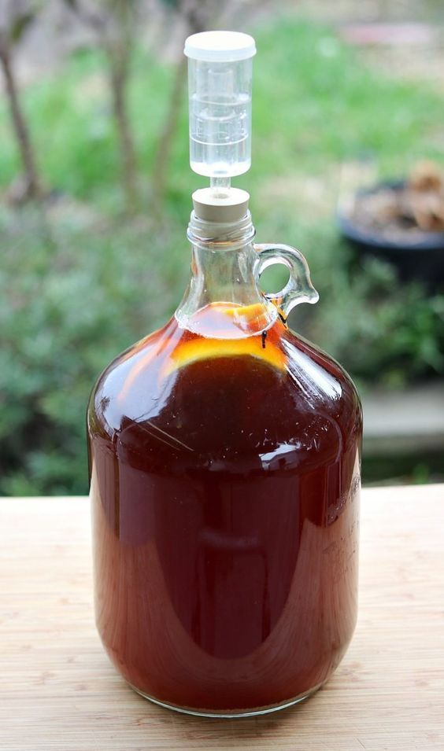

Honey Mead
Equipment
- 1-Gallon glass jug
- Large stainless-steel pot
- Large stainless-steel spoon
- Funnel
- Sanitizer
- Airlock and rubber stopper
- Thermometer
Ingredients
- 2.5 to 3 lbs, raw unprocessed honey
- 0.5 package of wine yeast
- Non-Chlorinated water
Optional, but recommended:
Fruits
- Most berries work well. Particularly strawberries, blueberries, and black berries.
- Apples, Oranges, Pears, Peaches, Mangoes, etc. etc.
- It really is dealers choice here, it will take a few batches and experimenting before you find the flavor you're looking for!
Spices
- Cloves, Cinammon, Nutmeg, Cardamon, etc. etc.
- Much with adding fruits, it will take experimenting to find the right amount of spices for you.
Instructions
- Sanitize your equipment: pot, jug, funnel, airlocks, spoon, etc. Follow the directions on the sanitizer package.
- Heat .5 gallon of non-chlorinated water in the large pot on medium heat, do not boil. Add the honey and stir until it fully dissolves. Remove from heat.
- Add your chosen fruits and spices to the one-gallon jug.
- Using a funnel, pour the honey-water mixture into the one-gallon jug.
- Leave atleast 2 inches of headspace at the top. Add additional cold non-chlorinated water if needed.
- Secure the lid and shake well.
When the temperature drops below 90 degrees F
, add .5 of the yeast pack.- Cap the bottle and give it a gentle shake to mix the yeast.
- Place the airlock on the jar, add a little water to the line, and then put the rubber stopper end into the jug.
- Wou should see bubbles within the first 48 hours.
- Store the jug in a dark cool place, or cover with with a towel. It will take 4 - 6 weeks for fermentation.
- It is ready when the bubbling has stopped or slowed to once every minute instead of every few seconds as it was initially.
- The liquid will be clear, and the yeast will settle to the jug's bottom.
- Do a taste test. Use a clean straw for tasting but be careful not to backwash into the mead.
- If you like the flavor, it is ready to bottle the mead.
- If it is too dry and you prefer a little sweeter, you can back-sweeten it. This is an additional process outside the scope of this recipe though.